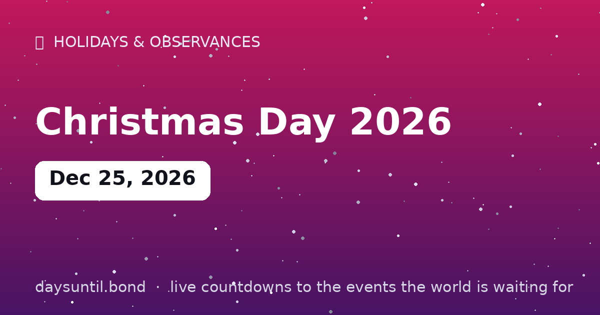

How Many Days Until Christmas Day 2026?
–days
–hours
–minutes
–seconds
Christmas Day 2026 falls on Friday, December 25, 2026.
As of October 13, 2026: 73 days to go — 10 weeks and 3 days, 53 weekdays (20 weekend days), about 1,752 hours.
📅 – weeks
💼 – weekdays
🛌 – weekend days
🗓️ – months (approx)

Quick facts
| Date | Friday, December 25, 2026 |
|---|---|
| Category | Holiday / observance |
About Christmas Day 2026
Christmas Day 2026 falls on Friday, December 25, 2026. The big one: the Christian celebration of the nativity and the world's most widely observed holiday — two billion people, one tree, and an economy the size of a small nation resting on what's under it.
The live counter above counts down the days, hours and minutes to Christmas Day 2026 in your local time zone, and switches to a 'days since' counter once it arrives.